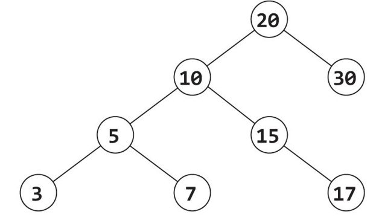
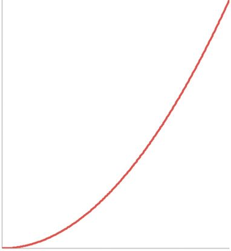
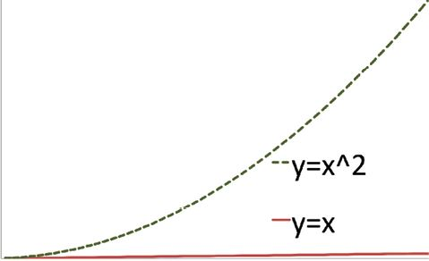

What You Need To Know
If you’re a recent graduate from a strong computer science program, you probably know most of what you need to know. Focus more on practicing interview questions than relearning actual knowledge, unless you discover major gaps.
Here’s the quick list of what you should know.
Note: we’re jumping right into big O notation to explain runtimes. If you don’t know big O or you are very vague on its meaning, you might want to jump ahead to read about it.
Data Structures
As its name suggests, a data structure is a structure for holding data. Depending on what you’re optimizing for, there are many different approaches to holding or organizing your data.
In roughly descending order of importance for an interview, the common data structures are:
Arrays
An array is the most straightforward way to hold a set of objects. It stores items in a simple list of objects. Looking up an object is fast if you know the index, but slow otherwise. For example, it’s fast to retrieve the 12th person in a list, but slow to find all people named “Alex” (since you have to look through all people).
In most languages, an array cannot “grow” in length after being created. You must specify the length of the array upfront and it cannot be changed after that.
Good Practice Problems:
16.1 Given a sorted array of positive integers with an empty spot (zero) at the end, insert an element in sorted order.
jump to solution
16.2 Reverse the order of elements in an array (without creating a new array).
jump to solution
Hashtables
A hashtable (sometimes called a “dictionary” or a “hashmap”) allows you to map a “key” to a “value.” This key is often a number or string, and the value can be any type of object.
This is a very useful data structure because it allows for very fast lookup. For the purposes of an interview, we generally assume that a hashtable is O(1) (constant time, regardless of the amount of data) to insert and look up elements, even though this isn’t 100 percent true. A poor implementation of a hashtable could have an O(N) look-up time.
You might use it to map from a person’s ID number to some object with other information about them.
Good Practice Problems
16.3 Given two lists (A and B) of unique strings, write a program to determine if A is a subset of B. That is, check if all the elements from A are contained in B.
jump to solution
16.4 You are given a two-dimensional array of sales data where the first column is a product ID and the second column is the quantity. Write a function to take this list of data and return a new two-dimensional array with the total sales for each product ID.
Example:
211,4
262,3
211,5
216,6
Output:
211,9
262,3
216,6
jump to solution
Trees and Graphs
A graph is a set of nodes which are connected through edges. Not all the nodes need to be connected—you could have two entirely separate subgraphs—and the edges can be either “directed” or “undirected.” A directed edge can be thought of as a one-way street, with an undirected edge being like a two-way street. If the graph is directed, an edge from v to w is not an edge from w to v. Therefore, you might be able to “drive” from node n to node m, but not the other way around.
A tree is a type of graph in which any two nodes are connected through one, and only one, path. A tree will not have any cycles since there can only be one path between any two nodes.
A tree can come in many forms, but by far the most common is the binary tree. A binary tree is a tree where each node has only two child nodes. We call these nodes the left node and the right node. As with all trees, there cannot be any “cycles” on the tree (no paths from a node back to itself). Because of these restrictions, a binary tree can be represented in a strictly hierarchical fashion like this:

Commonly, we work with binary search trees. A binary search tree is a tree in which all nodes in the left subtree are less than the node’s value, which is in turn less than the values of the all nodes in the right subtree. The above tree is a binary search tree.
If a binary search tree is balanced (and usually we deal with balanced binary search trees), inserting an element, as well as finding an element, is O(log n) where n is the number of nodes.
Good Practice Problems
16.5 Insert an element into a binary search tree (in order). You may assume that the binary search tree contains integers.
jump to solution
16.6 Given a binary search tree which contains integers as values, calculate the sum of all the numbers.
jump to solution
Linked Lists
Like a binary tree, a linked list is a data structure composed of nodes, where each node has a pointer to other nodes. In a singly-linked list, the node only has a pointer to its next node. In a doubly-linked list, the node has pointers to its previous node and its next node. It is generally considered highly problematic, and possibly a violation of the linked list structure, if the list has a cycle.
Inserting a node into the front of a linked list can be done in O(1) time. However, if the list is sorted and you wish to insert the node in order, it will take O(N) time, where N is the number of nodes. This is because you must first find the right spot, and this requires searching through the whole list.
Finding a node in a linked list is O(N), whether or not the list is sorted.
Good Practice Problems
16.7 Insert a node into a sorted linked list (in order). (Don’t forget about what happens when the new element is at the start or end!)
jump to solution
16.8 “Sort” a linked list that contains just 0s and 1s. That is, modify the list such that all 0s come before all 1s.
jump to solution
Stack
A stack is a data structure which defines a precise order for how elements must be inserted and removed. When an element is added, or “pushed,” it is inserted on the top of the stack. When an element is removed, it is “popped” from the top of the stack.
A stack is said to be a LIFO (last-in-first-out) data structure, since the last (most recent) element added is the first one to be removed.
In this way, it acts like a stack of plates in real life. When you add a plate onto a stack of plates, you add it on the top. When you remove a plate, you always remove from the top.
Inserting and removing from a stack is O(1). Finding an element with a particular value is not usually done, as it would require removing all the elements, one by one. A stack is not a good data structure choice if this is something you think you will need to do.
Good Practice Problems
16.9 Write a function which takes a stack as input and returns a new stack which has the elements reversed.
jump to solution
16.10 Write a function which removes all the even numbers from a stack. You should return the original stack, not a new one.
jump to solution
Queue
A queue is essentially the opposite of a stack. Rather than removing the newest item with a LIFO (last-in-first-out) principle, it removes the oldest item. It is said to be “FIFO” (first-in-first-out), since the first item you add will be the first one you remove.
It acts like a queue (or line) in real life. When people are in a queue for movie tickets, the first person to get in line is the first person who will be served. This is of course how the data structure gets its name.
Inserting (or “enqueuing”) and removing (or “dequeuing”) from a queue is O(1). As in a stack, finding an element would not ordinarily be implemented.
Good Practice Problems
16.11 Write a function to check if two queues are identical (same values in the same order). It’s okay to modify/destroy the two queues.
jump to solution
16.12 Write a function to remove the 13th element from a queue (but keep all the other elements in place and in the same order).
jump to solution
Algorithms
If you have a computer science degree, you know we could easily fill hundreds of pages with advanced algorithms. We won’t though, because these topics are rarely asked in interviews. Even developers are unlikely to be asked questions about, say, Dijkstra’s Algorithm, since interviewers care much more about your ability to create a new algorithm than memorizing an existing one.
Still, there are a few fundamental algorithms that are considered “fair game” for developers, and even for PMs. These come up frequently enough that it’s worth your time to remember them.
Sorting
The two most common good ways to sort an array are quick sort and merge sort. The others—bubble sort, insertion sort, radix sort, etc.—are less efficient in general or only work with specific assumptions.
Note that both algorithms have an approach of “divide in two parts and then re-apply algorithm.”
The other sorting algorithms are the naive implementations that you might do when, say, you’re trying to sort a stack of papers.
It’s unlikely that you’ll be asked to implement one of these algorithms by name, but it’s still useful to understand how one might sort data. PMs are sometimes asked to sort a list of data. Those with a recent CS degree would likely be expected to implement one of the more optimal algorithms, while those without a CS degree may get away with the more naive approaches.
Good Practice Problems
16.13 Given two sorted arrays, write a function to merge them in sorted order into a new array.
jump to solution
16.14 Implement insertion sort.
jump to solution
Binary Search
Binary search is an algorithm for locating a value in a sorted list (typically an array). In binary search, we compare the value to the midpoint of our list. Since our list is sorted, we can then determine whether the value should be located on the left side or the right side of this comparison element. We then search the left or right side, repeating this operation: compare to midpoint of the sublist, and then search the left or right half of that sublist.
Because we’re repeatedly dividing the data set in half, the algorithm takes O(log n) time in the average and worst case.
We often perform binary search in real life without realizing it. Imagine you had a stack of student exams sorted by first name. If you had a name like “Peter,” would you search starting from the top of the stack? Probably not. You would hop about halfway through, and then compare. If you see “Mary,” you know to keep going. You could then just search that second half of exams by continuously dividing the stack in half.
Binary search is a popular algorithm and therefore an important concept to understand. Many algorithms are based on binary search.
Good Practice Problems
16.15 Implement binary search. That is, given a sorted array of integers and a value, find the location of that value.
jump to solution
16.16 You are given an integer array which was sorted, but then rotated. It contains all distinct elements. Find the minimum value. For example, the array might be 6, 8, 9, 11, 15, 20, 3, 4, 5. The minimum value would obviously be 3.
jump to solution
Graph Search
There are two common algorithms for searching a graph: depth-first search and breadth-first search.
In depth-first search, we will completely search a node’s first child before going on to the second child, third child, and so on. For example, imagine a node with two children, A and B. If we are searching for a value v, we completely search A (and the nodes connected to A) before we check out B. It’s called “depth-first search” for this reason; we go deep before we go wide.
In breadth-first search, we go wide before deep. If we start from an initial node R, we first check R and all the nodes immediately connected to R (let’s call these “children”). Then, we expand our search outwards, searching all the nodes connected to R’s children. We repeat this process until we find the value or until we’ve completed searching this entire [sub-]graph.
In both algorithms, we need to be careful that we don’t wind up going in circles forever. Therefore, if there are cycles in the graph—that is, if there is more than one path to get from one node to another—then we need to mark the nodes as “already visited” to ensure that we don’t repeatedly search the same node. This will not be an issue for trees, as there are no cycles in a tree.
Note that a graph can have two completely separate parts that are not connected. If this is the case, we need to perform our search algorithm on each component to ensure that we find the item we’re looking for.
Good Practice Problems
16.17 Using depth-first search, check if a tree contains a value.
jump to solution
16.18 Write the pseudocode for breadth-first search on a binary tree. Try to be as detailed as possible.
jump to solution
Concepts
Big O Notation
Big O notation is a way to express the efficiency of an algorithm. If you’re going to be working with code, it is important that you understand big O. It is, quite literally, the language we use to express efficiency.
Big O will allow you understand the tradeoff of different features. For example, if you were working on a social networking website and you wanted to show how many friends two people have in common, you might suggest looking through each of my friends to see if the friend is in your list of friends. This probably takes O(N2) time, where N is the average number of friends a user has. That is, if you were to time how long this approach took as friends lists grew bigger and bigger, you would see that the graph of runtimes looks something like the f(x) = x2 graph. This is going to be very costly. You’ll need to come up with a better implementation.
f(x) = x2
Big O allows you to state this sort of information clearly and succinctly. It expresses how the execution time of a program scales with the input data. That is, as the input gets bigger, how much longer will the program take? Just a little bit longer? A lot longer? Will the time increase, say, exponentially with the size of input (yikes!)?
Suppose you have a function foo which does some processing on an array of size N. If foo takes O(N) time, then, as the array grows (that is, as N increases), the number of seconds foo takes will also increase in some sort of linear fashion.
Carrier Pigeons vs. The Internet
This is a true story.
In 2009, a South African company named The Unlimited grew frustrated by their ISP’s slow internet and made news by comically showing just how bad it was. They “raced” a carrier pigeon against their ISP. The pigeon had a USB stick affixed to its leg and was taught to fly to an office 50 miles away. Meanwhile, the company transferred this same data over the internet to this same office. The pigeon won—by a long shot.
What a joke this ISP was, right? A bird could transfer data faster than them. A bird!
Their internet may or may not have been slow, but this experiment doesn’t say much. No matter how fast or slow your internet is, you can select an amount of data that will allow the internet or a pigeon to win.
Here’s why:
How long does it take a pigeon to fly 50 miles with a 10 GB USB stick attached to its leg? Let’s say it takes about 3 hours. Great.
Now, how long does it take to transfer 10 GB on the internet? Let’s say you have pretty fast internet, and 10 GB only takes 30 minutes. Okay, then transfer 100 GB and you know it will take more than 3 hours.
How long does it take that same pigeon to “transfer” 100 GB? Still 3 hours. The pigeon’s transfer speed doesn’t depend on the amount of data. USB sticks are pretty light but can fit a ton of data. (This is a bit of an oversimplification, of course. With enough data, you would need many USB sticks and eventually many pigeons.)
So, just like that, the pigeon beat the internet!
The pigeon’s transfer time is constant. The internet’s transfer time is proportional to the amount of data: twice the data will take about twice as much time.
In big O time, we’d say that the pigeon takes O(1) time. This means that the time it takes to transfer N gigabytes varies proportionally with 1. That is, it doesn’t vary at all.
The internet’s transfer speed is O(N). This means that the amount of time it takes varies proportionally with N.
Big O offers an equation to describe how the time of a procedure changes relative to its input. It describes the trend. It does not define exactly how long it takes, as procedures with larger big O time could be faster on specific inputs.
Real-Life Big O
Many “operations” in real life are O(N). Driving, for example, can be thought of as O(N). As the distance N increases, driving time also increases in a linear fashion.
What might not be O(N)?
Imagine we invited a bunch of people (including you) to a dinner party. If I invited twice as many people to the party, you will have to shake twice as many hands. The time it will take you to shake everyone’s hand can be expressed as O(N). If I double the amount of guests, it will take you twice as long. This is a linear, or O(N), increase.
Now, let’s suppose everyone wants to shake hands, but for some strange reason only one pair of people can shake hands at a time. As N increases, how much longer will this meet and greet take? Well, your work will take O(N) time—but so will everyone else’s. The time it takes increases proportionally with O(N2), since there are roughly N2 pairs.
Dropping Constants
If you are paying close attention, you might say, “But wait! There aren’t N2 pairs. People aren’t shaking hands with themselves, and you’re double counting every pair. There are really N(N-1)/2 pairs. So we should say O(N(N-1)/2).”
You’re absolutely right. There are N(N-1)/2 pairs (which is .5*N2 - .5N), but we still say that this is O(N2).
Big O is very hand-wavey, wishy-washy. We’re trying to express how the time changes in rough terms, not offer a precise calculation for the number of seconds something takes.
As a result, we drop constant factors, so O(2N) is the same as O(N). We also drop the addition or subtraction of constants, so O(N - 5) becomes O(N). Put together, these two factors mean that O(N2 + N) should be written as O(N2). Think about it: if O(N2) and O(N2 + N2) are the same, then O(N2 + N), which is between those two, should be treated as the same.
This is a very important thing to understand. You should never express an algorithm as “O(2N).” This is not a “more precise” or “better” answer than O(N); it’s only a confusing one. A so-called “O(2N)” algorithm is O(N) and should be expressed as such.
Which of the below expressions are equivalent to O(N3)?
O(3N3)
O(N(N2 + 3))
O(N3 - 2)
O(N3 + N lg N)
O(N3 - N2 + N)
O((N2 + 3)(N+1))
All of them!
Drop your constants and just keep the most important term.
Multiple Variables
Back to the handshaking example. Suppose we invited men and women to our dinner party. All the men already know each other and all the women already know each other. Therefore, people will only shake hands with the opposite gender.
Assuming that we’re still in bizarro land where only one pair can shake hands at a time, how would you express how long this takes?
Don’t say O(N2). Suppose we have 100 men and 1 woman. Adding one man will add one handshake, but adding one woman will add 100 handshakes. The time it takes does not actually increase proportional to the number of people squared.
These are different “variables,” and it matters which one we increase. The correct way to express this is with two variables. If there are M men and W women, then our meet and greet takes O(M*W) time.
What if the women all knew each other, but the men knew no one at all? We would then say that the meet and greet is O(M2 + M*W). Note that we do not drop that extra M*W term; it’s a different variable, and it matters.
Why This Matters (And Why It Doesn’t)
Let’s suppose that we have two functions which process some data. The function foo takes O(N) time and the function bar takes O(N2) time. On a given data set (for example, a specific list of people), which one will be faster?
We don’t know, actually.
The runtime of foo will increase proportionally to O(N) and the runtime of bar will increase proportionally to O(N2). So, eventually, the O(N2) line should exceed the O(N) time.

However, we can’t make any determinations on a particular data set. The O(N2) could be faster on smaller data sets; it might not have yet exceeded the O(N) line. Plus, even on very large data—after this “overtaking” occurs—there could be exceptions. Maybe, when N is divisible by 1000, the bar code will hit a special case and suddenly operate very quickly. We just don’t know.
This doesn’t make big O useless; we just have to be very careful about how we apply it.
Big O allows us to say things like, “In general, as our data set grows in size, this algorithm will be much, much faster than this other one.” It also allows us to say, “You want to run this O(N2) algorithm, and N is the number of files on our network? Sorry, that’s just not going to work.” That matters—a lot.
Moreover, it gives us a language for expressing efficiency that isn’t reliant on the system architecture or the technologies used. Without big O, we’d likely have to discuss efficiency in terms of seconds, which has little meaning when you are on a different system.
Logs and Big O
You might notice, as you’re doing problems, that we (and others) describe problems as O(log(N)) or O(lg(N)), but we aren’t particularly concerned about specifying whether we mean log2(N) or log10(N). That’s because it doesn’t matter. The difference between one log and another is just a constant factor: logb(n) equals logk(n) / logk(b). Since big O time doesn’t care about constant factors, we don’t need to care about what our log base is.
Big O Space and More
The concept of big O can be used for much more than runtime. In fact, very commonly it is used to describe how much memory an algorithm uses.
For example, suppose I have an algorithm that creates and initializes an NxN matrix:
This algorithm takes O(N2) time and O(N2) space.
Note: If you’ve taken an algorithms class, you might remember that, technically, big O refers to an upper bound. Anything that is O(N) could also be said to be O(N2). To describe the exact runtime, we should be using big-theta.
That is true, by the official mathematical definition of big O. However, outside of an algorithms class, this distinction has been forgotten about.
Sample Problems
Now, let’s move on to some examples (in pseudocode). Can you find the runtime of each of these problems?
Example 1
Consider the following code to print the numbers from 0 to n.
This is said to be O(n) time. That is, if we were to run this code for many different values of n, the runtime would increase at a rate proportional to n.
Example 2
What about this code?
This is O(N2) time. There are two for-loops, each running from 0 to n. How many times does line 5 get executed? O(N2). The time for this code to run will increase at a rate of O(N2).
Example 3
The code below uses two variables. What is its running time?
This is said to be O(a*b), where a is the length of A and b is the length of B. Although the inner while loop may sometimes terminate early (having found a[i]), the expected case is that it will iterate through roughly all of B.
Example 4
Here is a more challenging example.
We need to think about what this for loop will do. This for loop will do something (print a value) and then continuously divide by 2 until it gets below 1.
How many times can we divide N by 2 until we get below 1 and the while loop terminates? If we approached this in reverse, we could say: how many times can we multiply 1 by 2 until we get to N? This would be the value x, where 2x = n. This for loop, therefore, iterates x times.
Now we just need to solve for x:
2x = n
log(2x) = log(n)
x log(2) = log(n)
x = log(n) / log(2)
So, this code operates in O(log(n)) time.
This is a good thing to remember: if something continuously divides in half, it is O(log(N)) time.
Recursion
If a function can call other functions, then it can call itself. This is recursion.
Recursion can be a useful strategy to solve a large number of problems. It works well when the solution to a problem can be defined in terms of the solutions to subproblems.
For example, consider the factorial problem. What is n! (n factorial)? n! is n * (n-1) * (n-2) * … * 1. We could also say that n! is n * (n-1)!.
This leads to an extremely short bit of code to compute n!.
The base case (or terminating condition) is extremely important. Without it, the function would run forever.
Here’s another example of a recursive function. This computes the nth fibonacci number. As you may recall, the nth fibonacci number, f(n), is f(n-1) + f(n-2).
This is a natural function to implement recursively, as the nth fibonacci numbers are defined by their smaller problems.
Memory Usage
Any problem that can be solved recursively can also be solved iteratively (non-recursively), although sometimes doing so is much more complicated. However, recursion comes with a drawback, which is memory usage.
Recall this example:
This takes O(N) time, and will on any solution. What is its memory usage? Its memory usage will be O(N) too (assuming no fancy optimizations by the compiler).
The method factorial(n) calls factorial(n-1), which calls factorial(n-2), and so on. Note that factorial(n) does not complete until factorial(n-1) completes, which in turn doesn’t complete until factorial(n-2).
Therefore, at one point in time, we have n functions in operation at once, on the “call stack.”
factorial(0)
factorial(1)
...
factorial(n-1)
factorial(n)
Each one of those takes up some memory. Therefore, at one point in time, n chunks of memory are being used. This means that this program, when implemented recursively, is O(N) time and O(N) memory.
This is the drawback of recursion: the recursive calls take up memory.